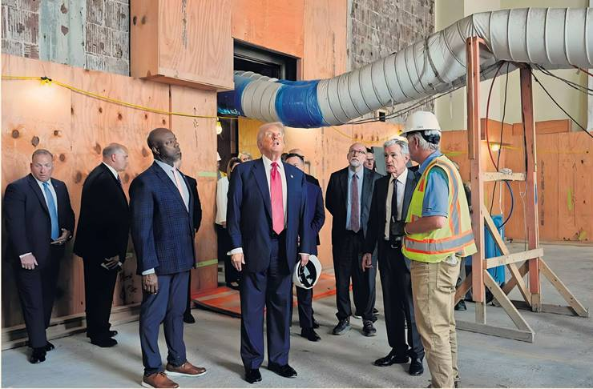

Will the Fed bow to pressure from Trump for a rate cut?
While the Federal Reserve is widely expected to keep interest rates on hold when it meets this week — despite intense pressure from US President Donald Trump for a cut — investors will be watching closely for any hints from chair Jay Powell about the pace of future easing.
Markets are currently pricing in a less than 3 per cent chance that the Fed will cut this month but economists surveyed by Reuters still expect at least one quarter-point reduction later this year, while futures markets expect one with a high chance of a second by December.
The Fed has been under unusually high pressure from the president, who has been scrutinising the cost of refurbishing its Washington headquarters as he steps up his attacks on the chair.
Trump, who appointed Powell in 2017, has called him a “numbskull” in recent weeks. Powell’s term as chair is set to end next year. Members of the Federal Open Market Committee have recently been divided on the issue of whether and when to cut. As of June’s “dot plot” release, 10 rate-setters favoured at least one rate cut by the end of 2025 while seven preferred no cuts this year.
“It will be interesting to watch whether Powell alludes to some potential policy easing before year-end, or if he refrains from providing any explicit forward guidance, given the strong FOMC split,” said Gregory Daco, chief economist at EY-Parthenon, who said he expects two quarter-point cuts in 2025 and the equivalent of four such reductions in 2026.
Goldman Sachs analyst Jessica Rindels said this month that she and her colleagues continue to expect three quarter-point cuts, one in each of the Fed’s upcoming September, October and December meetings, plus a half-point worth of cuts in 2026. — Will Schmitt
How does the Bank of Japan view the trade deal with the US?
Investors will be eager to hear how policymakers think the trade deal clinched between Washington and Tokyo will shift the outlook for growth and inflation, when the Bank of Japan meets this week. Shinichi Uchida, the central bank’s deputy governor, said this month that uncertainty had receded because of the deal, a signal that it could be more likely to resume its tightening cycle. It last raised the policy rate by a quarter-point to “around 0.5 per cent” in January, the highest level in 17 years. Traders are putting a minuscule probability on a rate rise this week, according to levels implied by swaps markets, but are ascribing a two-thirds chance of it coming by October. “We're becoming more confident in our forecast that the bank will resume its tightening cycle at its October meeting,” said Marcel Thieliant, head of Asia- Pacific at Capital Economics. Concerns that the trade deal “could end up being deflationary in Japan have proved unfounded”, Thieliant added. However, core year-on-year inflation tracked by the Tokyo Consumer Price index for July, published on Friday, came in at 2.9 per cent, slightly below the 3 per cent economists had expected. The Bo] “will not be rushing to resume raising rates”, said analysts at Brown Brothers Harriman. Jan Smith European Central Bank president Chris- tine Lagarde described its policymakers as being in “wait-and-watch” mode last week, as they looked for clear evidence of how global trade turmoil is affecting the Eurozone economy. There will be plenty for them to watch this week, as a slew of data offers potentially important signals about how growth and inflation are faring ahead of the August 1 deadline for a trade deal between the US and the EU. After strong growth in the first quarter fuelled by companies frontloading ahead of tariffs, second-quarter GDP data due on Wednesday is expected to show year-on-year growth slowed to 1.2 per cent in the second quarter, according to economists polled by Reuters. Bert Colijn, an economist at ING, said the GDP figure is likely to be a “reality check” for Europe, and that “the impact of US developments on Eurozone GDP will likely have been negative”. Growth data will then be followed by inflation on Friday, which economists polled by Reuters expect to have fallen to 1.9 per cent in July, down from 2 per cent in June. Both data points could alter investors’ views about how the ECB will approach the rest of this year. Lagarde’s comments, as well as growing optimism about a US-EU trade deal that could help economic growth, led investors to trim the probability of a further rate cut this year to about 60 per cent. With doubts starting to emerge in the market about the chance of another rate reduction, this week’s data could be influential. Stronger than expected inflation or GDP figures could mean that bets on another cut to the benchmark rate evaporate.